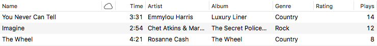
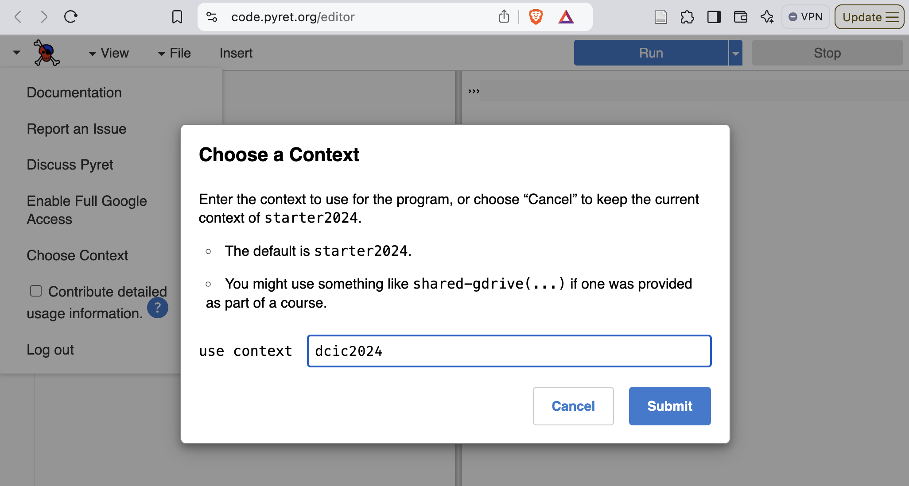
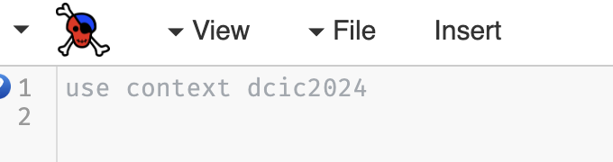
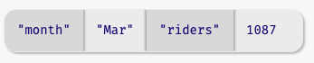

4.1 Introduction to Tabular Data
An email inbox is a list of messages. For each message, your inbox stores a bunch of information: its sender, the subject line, the conversation it’s part of, the body, and quite a bit more.

A music playlist. For each song, your music player maintains a bunch of information: its name, the singer, its length, its genre, and so on.

A filesystem folder or directory. For each file, your filesystem records a name, a modification date, size, and other information.

Do Now!
Can you come up with more examples?
Responses to a party invitation.
A gradebook.
A calendar agenda.
They contain information about zero or more items (i.e., individuals or artifacts) that share characteristics. Each item is stored in a row. Each column tracks one of the shared attributes across the rows. For example, each song or email message or file is a row. Each of their characteristics—
the song title, the message subject, the filename— is a column. While some spreadsheets might swap the roles of rows and columns, we stick to this organization as it aligns with the design of data-science software libraries. This is an example of what Hadley Wickham calls tidy data. Each row has the same columns as the other rows, in the same order.
A given column has the same type, but different columns can have different types. For instance, an email message has a sender’s name, which is a string; a subject line, which is a string; a sent date, which is a date; whether it’s been read, which is a Boolean; and so on.
The rows might be in some particular order. For instance, the emails are ordered by which was most recently sent.
Exercise
Find the characteristics of tabular data in the other examples described above, as well as in the ones you described.
We will now learn how to program with tables and to how to
decompose tasks that process them. To access the functions that we’ll
use to do this, you need to set the context (at the top of the
definitions window) to dcic2024. Earlier editions of the
book had you use shared-gdrive to load a file to access these
functions. This is no longer necessary when using the dcic2024
context. In
CPO, click on the down arrow at the top left of the screen (left of
the Pyret logo), select ”Choose Context“, then enter dcic2024
in the box, as shown in this screenshot:

After you click the Submit button, the definitions window will show the name of the context as in the following image:

Documentation on the function-based table operators is available on a separate page outside of the Pyret documentation.
4.1.1 Creating Tabular Data
table: name, age
row: "Alicia", 30
row: "Meihui", 40
row: "Jamal", 25
endtable is followed by the names of the columns in
their desired order, followed by a sequence of rows. Each row
must contain as many data as the column declares, and in the same
order.Exercise
Change different parts of the above example—
e.g., remove a necessary value from a row, add an extraneous one, remove a comma, add an extra comma, leave an extra comma at the end of a row— and see what errors you get.
check:
table: name, age
row: "Alicia", 30
row: "Meihui", 40
row: "Jamal", 25
end
is-not
table: age, name
row: 30, "Alicia"
row: 40, "Meihui"
row: 25, "Jamal"
end
endis-not, i.e., the test
passes, meaning that the tables are not equal.The check: annotation here is a way of writing is
assertions about expressions outside of the context of a function (and
its where block). We’ll learn more about check in
From Examples to Tests.
people = table: name, age
row: "Alicia", 30
row: "Meihui", 40
row: "Jamal", 25
endtable.
Pyret provides other ways to get tabular data, too! In
particular, you can import tabular data from a spreadsheet, so
any mechanism that lets you create such a sheet can also be used. You
might:
create the sheet on your own,
create a sheet collaboratively with friends,
find data on the Web that you can import into a sheet,
create a Google Form that you get others to fill out, and obtain a sheet out of their responses
With tables, we begin to explore data that contain other (smaller) pieces of data. We’ll refer to such data as structured data. Structured data organize their inner data in a structured way (here, rows and columns). As with images, when we wrote code that reflected the structure of the final image, we will see that code that works with tables also follows the structure of the data.
4.1.2 Extracting Rows and Cell Values
Given a table, we sometimes want to look up the value of a particular cell. We’ll work with the following table showing the number of riders on a shuttle service over several months:
shuttle = table: month, riders
row: "Jan", 1123
row: "Feb", 1045
row: "Mar", 1087
row: "Apr", 999
endDo Now!
If you put this table in the definitions pane and press Run, what will be in the Pyret directory once the interactions prompt appears? Would the column names be listed in the directory?
As a reminder, the directory contains only those names that we assign
values to using the form name = . The directory here would
contain shuttle, which would be bound to the table (yes, the
entire table would be in the directory!). The column names would not
have their own entries in the directory. At the low level, this is because we
never wrote anything of the form colname = .... At the high
level, we don’t usually build tables by creating individual columns
and putting them together side by side. (If anything, it is more common
to create individual rows, since rows correspond to individual
observations, events, or entities; we didn’t do that in this
example, however).
Starting from the name associated with a table, we can lookup the
value in a given cell (row and column) in the table. Concretely,
assume we want to extract the number of riders in March (1087)
so we can use it in another computation. How do we do that?
Pyret (and most other programming languages designed for data analysis) organizes tables as collections of rows with shared columns. Given that organization, we get to a specific cell by first isolating the row we are interested in, then retrieving the contents of the cell.
shuttle.row-n(2)shuttle table, extracting row
number 2" (which is really the third row since Pyret counts
positions from 0).If we run this expression at the prompt, we get

This is a new type of data called a Row. When Pyret displays a
Row value, it shows you the column names and the corresponding
values within the row.
To extract the value of a specific column within a row, we write the
row followed by the name of the column (as a string) in square
brackets. Here are two equivalent ways of getting the value of the
riders column from the row for March:
shuttle.row-n(2)["riders"]march-row = shuttle.row-n(2)
march-row["riders"]Do Now!
What names would be in the Pyret directory when using each of these approaches?
Once we have the cell value (here a Number), we can use it in
any other computation, such as
shuttle.row-n(2)["riders"] >= 10001000 riders in March).Do Now!
What do you expect would happen if you forgot the quotation marks and instead wrote:
shuttle.row-n(2)[riders]What would Pyret do and why?
4.1.3 Functions over Rows
Now that we have the ability to isolate Rows from tables, we can write
functions that ask questions about individual rows. We just saw an
example of doing a computation over row data, when we checked whether
the row for March had more than 1000 riders. What if we wanted to do
this comparison for an arbitrary row of this table? Let’s write a
function! We’ll call it cleared-1K.
Let’s start with a function header and some examples:
fun cleared-1K(r :: Row) -> Boolean:
doc: "determine whether given row has at least 1000 riders"
...
where:
cleared-1K(shuttle.row-n(2)) is true
cleared-1K(shuttle.row-n(3)) is false
endRow functions look like, as
well as how we use Row as an input type.To fill in the body of the function, we extract the content of the
"riders" cell and compare it to 1000:
fun cleared-1K(r :: Row) -> Boolean:
doc: "determine whether given row has at least 1000 riders"
r["riders"] >= 1000
where:
cleared-1K(shuttle.row-n(2)) is true
cleared-1K(shuttle.row-n(3)) is false
endDo Now!
Looking at the examples, both of them share the
shuttle.row-nportion. Would it have been better to instead makecleared-1Ka function that takes just the row position as input, such as:fun cleared-1K(row-pos :: Number) -> Boolean: ... where: cleared-1K(2) is true cleared-1K(3) is false endWhat are the benefits and limitations to doing this?
In general, the version that takes the Row input is more
flexible because it can work with a row from any table that has
a column named "riders". We might have another table with more
columns of information or different data tables for different
years. If we modify cleared-1K to only take the row position as
input, that function will have to fix which table it works with. In
contrast, our original version leaves the specific table
(shuttle) outside the function, which leads to flexibility.
Exercise
Write a function
is-winterthat takes aRowwith a"month"column as input and produces aBooleanindicating whether the month in that row is one of"Jan","Feb", or"Mar".
Exercise
Write a function
low-winterthat takes inRowwith both"month"and"riders"columns and produces aBooleanindicating whether the row is a winter row with fewer than 1050 riders.
Exercise
Practice with the program directory! Take a
Rowfunction and one of itswhereexamples, and show how the program directory evolves as you evaluate the example.
4.1.4 Processing Rows
So far, we have looked at extracting individual rows by their position in the table and computing over them. Extracting rows by position isn’t always convenient: we might have hundreds or thousands of rows, and we might not know where the data we want even is in the table. We would much rather be able to write a small program that identifies the row (or rows!) that meets a specific criterion.
Pyret offers three different notations for processing tables: one uses functions, one uses methods, and one uses a SQL-like notation. This chapter uses the function-based notation. The SQL-like notation and the methods-based notation are shown in the Pyret Documentation. To use the function-based notation, you’ll need to include the file specified in the main narrative.
The rest of this section assumes that you have loaded the functions notations for working with tables.
4.1.4.1 Finding Rows
Imagine that we wanted to write a program to locate a row that has
fewer than 1000 riders from our shuttle table. With what
we’ve studied so far, how might we try to write this? We could imagine
using a conditional, like follows:
if shuttle.row-n(0)["riders"] < 1000:
shuttle.row-n(0)
else if shuttle.row-n(1)["riders"] < 1000:
shuttle.row-n(1)
else if shuttle.row-n(2)["riders"] < 1000:
shuttle.row-n(2)
else if shuttle.row-n(3)["riders"] < 1000:
shuttle.row-n(3)
else: ... # not clear what to do here
endDo Now!
What benefits and limitations do you see to this approach?
There are a couple of reasons why we might not care for this solution. First, if we have thousands of rows, this will be terribly painful to write. Second, there’s a lot of repetition here (only the row positions are changing). Third, it isn’t clear what to do if there aren’t any matching rows. In addition, what happens if there are multiple rows that meet our criterion? In some cases, we might want to be able to identify all of the rows that meet a condition and use them for a subsequent computation (like seeing whether some months have more low-ridership days than others).
This conditional is, however, the spirit of what we want to do: go through the rows of the table one at a time, identifying those that match some criterion. We just don’t want to be responsible for manually checking each row. Fortunately for us, Pyret knows how to do that. Pyret knows which rows are in a given table. Pyret can pull out those rows one position at a time and check a criterion about each one.
We just need to tell Pyret what criterion we want to use.
As before, we can express our criterion as a function that takes a
Row and produces a Boolean (a Boolean because our
criterion was used as the question part of an if expression in
our code sketch). In this case, we want:
fun below-1K(r :: Row) -> Boolean:
doc: "determine whether row has fewer than 1000 riders"
r["riders"] < 1000
where:
below-1K(shuttle.row-n(2)) is false
below-1K(shuttle.row-n(3)) is true
endNow, we just need a way to tell Pyret to use this criterion as it
searches through the rows. We do this with a function called
filter-with which takes two inputs: the table to process and the
criterion to check on each row of the table.
filter-with(shuttle, below-1K)Under the hood, filter-with works roughly like the if
statement we outlined above: it takes each row one at a time and calls
the given criterion function on it. But what does it do with the
results?
filter-with
produces a table containing the matching row, not the row by
itself. This behavior is handy if multiple rows match the
criterion. For example, try:
filter-with(shuttle, is-winter)is-winter function from an exercise earlier in this
chapter). Now we get a table with the three rows corresponding to winter
months. If we want to be able to name this table for use in future
computations, we can do so with our usual notation for naming values:
winter = filter-with(shuttle, is-winter)4.1.4.2 Ordering Rows
Let’s ask a new question: which winter month had the fewest number
of riders?. This question requires us to identify a specific row,
namely, the winter row with the smallest value in the "riders"
column.
Do Now!
Can we do this with
filter-with? Why or why not?
Think back to the if expression that motivated
filter-with: each row is evaluated independently of the
others. Our current question, however, requires comparing across
rows. That’s a different operation, so we will need more than
filter-with.
Tools for analyzing data (whether programming languages or
spreadsheets) provide ways for users to sort rows of a table
based on the values in a single column. That would help us here: we
could sort the winter rows from smallest to largest value in the
"riders" column, then extract the "riders" value from
the first row. First, let’s sort the rows:
order-by(winter, "riders", true)The order-by function takes three inputs: the table to sort
(winter), the column to sort on ("riders"), and a
Boolean to indicate whether we want to sort in increasing
order. (Had the third argument been false, the rows would be
sorted in decreasing order of the values in the named column.)

In the sorted table, the row with the fewest riders is in the first position. Our original question asked us to lookup the month with the fewest riders. We did this earlier.
Do Now!
Write the code to extract the name of the winter month with the fewest riders.
Here are two ways to write that computation:
order-by(winter, "riders", true).row-n(0)["month"]sorted = order-by(winter, "riders", true)
least-row = sorted.row-n(0)
least-row["month"]Do Now!
Which of these two ways do you prefer? Why?
Do Now!
How does each of these programs affect the program directory?
Note that this problem asked us to combine several actions that we’ve
already seen on rows: we identify rows from within a table
(filter-with), order the rows (order-by), extract a
specific row (row-n), then extract a cell (with square brackets
and a column name). This is typical of how we will operate on tables,
combining multiple operations to compute a result (much as we did with
programs that manipulate images).
4.1.4.3 Adding New Columns
hourly-wage and
hours-worked, representing the corresponding quantities. We
would now like to extend this table with a new column to reflect each
employee’s total wage. Assume we started with the following table:
employees =
table: name, hourly-wage, hours-worked
row: "Harley", 15, 40
row: "Obi", 20, 45
row: "Anjali", 18, 39
row: "Miyako", 18, 40
endemployees =
table: name, hourly-wage, hours-worked, total-wage
row: "Harley", 15, 40, 15 * 40
row: "Obi", 20, 45, 20 * 45
row: "Anjali", 18, 39, 18 * 39
row: "Miyako", 18, 40, 18 * 40
endtotal-wage column computed to
their numeric equivalents: we used the expressions here to illustrate
what we are trying to do).Previously, when we have had a computation that we performed multiple times, we created a helper function to do the computation.
Do Now!
Propose a helper function for computing total wages given the hourly wage and number of hours worked.
Perhaps you came up with something like:
fun compute-wages(wage :: Number, hours :: Number) -> Number:
wage * hours
endemployees =
table: name, hourly-wage, hours-worked, total-wage
row: "Harley", 15, 40, compute-wages(15, 40)
row: "Obi", 20, 45, compute-wages(20, 45)
row: "Anjali", 18, 39, compute-wages(18, 39)
row: "Miyako", 18, 40, compute-wages(18, 40)
endThis is the right idea, but we can actually have this function do a
bit more work for us. The wage and hours values are in
cells within the same row. So if we could instead get the current row
as an input, we could write:
fun compute-wages(r :: Row) -> Number:
r["hourly-wage"] * r["hours-worked"]
end
employees =
table: name, hourly-wage, hours-worked, total-wage
row: "Harley", 15, 40, compute-wages(<row0>)
row: "Obi", 20, 45, compute-wages(<row1>)
row: "Anjali", 18, 39, compute-wages(<row2>)
row: "Miyako", 18, 40, compute-wages(<row3>)
endBut now, we are writing calls to compute-wages over and over!
Adding computed columns is a sufficiently common operation that Pyret
provides a table function called build-column for this
purpose. We use it by providing the function to use to populate values
in the new column as an input:
fun compute-wages(r :: Row) -> Number:
doc: "compute total wages based on wage and hours worked"
r["hourly-wage"] * r["hours-worked"]
end
build-column(employees, "total-wage", compute-wages)total-wage, whose value in each row
is the product of the two named columns in that row. Pyret will put
the new column at the right end.4.1.4.4 Calculating New Column Values
Sometimes, we just want to calculate new values for an existing
column, rather than create an entirely new column. Giving raises to
employees is one such example. Assume we wanted to give a 10% raise to
all employees making less than 20 an hour. We could write:
fun new-rate(rate :: Number) -> Number:
doc: "Raise rates under 20 by 10%"
if rate < 20:
rate * 1.1
else:
rate
end
where:
new-rate(20) is 20
new-rate(10) is 11
new-rate(0) is 0
end
fun give-raises(t :: Table) -> Table:
doc: "Give a 10% raise to anyone making under 20"
transform-column(t, "hourly-wage", new-rate)
endtransform-column takes a table, the name of an existing
column in the table, and a function to update the value. The updating
function takes the current value in the column as input and produces
the new value for the column as output.Do Now!
Run
give-raiseson theemployeestable. What wage will show for"Miyako"in theemployeestable aftergive-raisescompletes. Why?
Like all other Pyret Table operations, transform-column
produces a new table, leaving the original intact. Editing the
original table could be problematic–what if you made a mistake? How
would you recover the original table in that case? In general,
producing new tables with any modifications, then creating a new name
for the updated table once you have the one you want, is a less
error-prone way of working with datasets.
4.1.5 Examples for Table-Producing Functions
How do we write examples for functions that produce tables? Conceptually, the answer is simply "make sure you got the output table that you expected". Logistically, writing examples for table functions seems more painful because writing out an expected output tables is more work than simply writing the output of a function that produces numbers or strings. What can we do to manage that complexity?
Do Now!
How might you write the
whereblock forgive-raises?
Here are some ideas for writing the examples practically:
Simplify the input table. Rather than work with a large table with all of the columns you have, create a small table that has sufficient variety only in the columns that the function uses. For our example, we might use:
wages-test = table: hourly-wage row: 15 row: 20 row: 18 row: 18 endDo Now!
Would any table with a column of numbers work here? Or are there some constraints on the rows or columns of the table?
The only constraint is that your input table has to have the column names used in your function.
Remember that you can write computations in the code to construct tables. This saves you from doing calculations by hand.
where: give-raises(wages-test) is table: hourly-wage row: 15 * 1.1 row: 20 row: 18 * 1.1 row: 18 * 1.1 endThis example shows that you can write an output table directly in thewhere:block – the table doesn’t need to be named outside the function.Create a new table by taking rows from an existing table. If you were instead writing examples for a function that involves filtering out rows of a table, it helps to know how to create a new table using rows of an existing one. For example, if we were writing a function to find all rows in which employees were working exactly 40 hours, we’d like to make sure that the resulting table had the first and fourth rows of the
employeestable. Rather than write a newtableexpression to create that table, we could write it as follows:emps-at-40 = add-row( add-row(employees.empty(), employees.row-n(0)), employees.row-n(3))Here,employees.empty()creates a new, empty table with the same column headers asemployees. We’ve already seen howrow-nextracts a row from a table. Theadd-rowfunction places the given row at the end of the given table.
Another tip to keep in mind: when the only thing your function does is call
a built-in function like transform-column it usually suffices
to write examples for the function you wrote to compute the new column
value. It is only when your code is combining table operations, or
doing more complex processing than a single call to a built-in table
operation that you really need to present your own examples to a
reader of your code.
4.1.6 Lambda: Anonymous Functions
Let’s revisit the program we wrote in Finding Rows for finding all of the months in a table with fewer than 1000 riders:
shuttle = table: month, riders
row: "Jan", 1123
row: "Feb", 1045
row: "Mar", 1087
row: "Apr", 999
end
fun below-1K(r :: Row) -> Boolean:
doc: "determine whether row has fewer than 1000 riders"
r["riders"] < 1000
where:
below-1K(shuttle.row-n(2)) is false
below-1K(shuttle.row-n(3)) is true
end
filter-with(shuttle, below-1K)This program might feel a bit verbose: do we really need to write a
helper function just to perform something as simple as a
filter-with? Wouldn’t it be easier to just write something like:
filter-with(shuttle, r["riders"] < 1000)Do Now!
What will Pyret produce if you run this expression?
Pyret will produce an unbound identifier error around the use
of r in this expression. What is r? We mean for r
to be the elements from shuttle in turn. Conceptually, that’s
what filter-with does, but we don’t have the mechanics right. When
we call a function, we evaluate the arguments before the body
of the function. Hence, the error regarding r being unbound.
The whole point of the below-1K helper function is to make
r a parameter to a function whose body is only evaluated once
a value for r is available.
To tighten the notation as in the one-line filter-with expression,
then, we have to find a way to tell Pyret to make a temporary function
that will get its inputs once filter-with is running. The following
notation achieves this:
filter-with(shuttle, lam(r): r["riders"] < 1000 end)We have added lam(r) and end around the expression that
we want to use in the filter-with. The lam(r) says "make a
temporary function that takes r as an input". The end
serves to end the function definition, as when we use
fun. lam is short for lambda, a form of function
definition that exists in many, though not all, languages.
The main difference between our original expression (using the
below-1K helper) and this new one (using lam) can be
seen through the program directory. To explain this, a little detail
about how filter-with is defined under the hood. In part, it looks
like:
fun filter-with(tbl :: Table, keep :: (Row -> Boolean)) -> Table:
if keep(<row-from-table>):
...
else:
...
end
endWhether we pass below-1K or the lam version to
filter-with, the keep parameter ends up referring to a
function with the same parameter and body. Since the function is only
actually called through the keep name, it doesn’t matter
whether or not a name is associated with it when it is initially
defined.
In practice, we use lam when we have to pass simple (single line)
functions to operations like filter-with (or transform-column,
build-column, etc). Of course, you can continue to write out names for
helper functions as we did with below-1K if that makes more sense to
you.
Exercise
Write the program to add 10 riders to each row in the
shuttletable above, usinglamrather than a named helper-function.